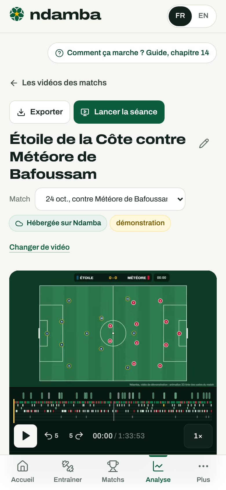
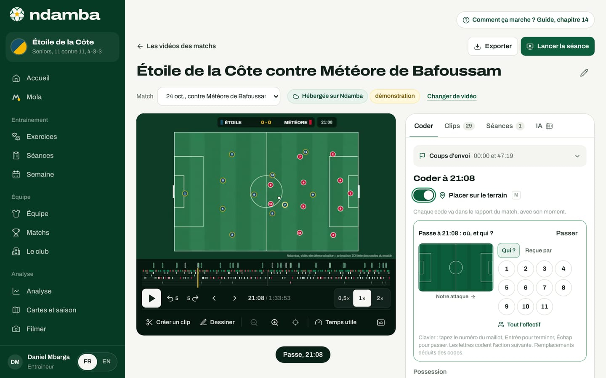
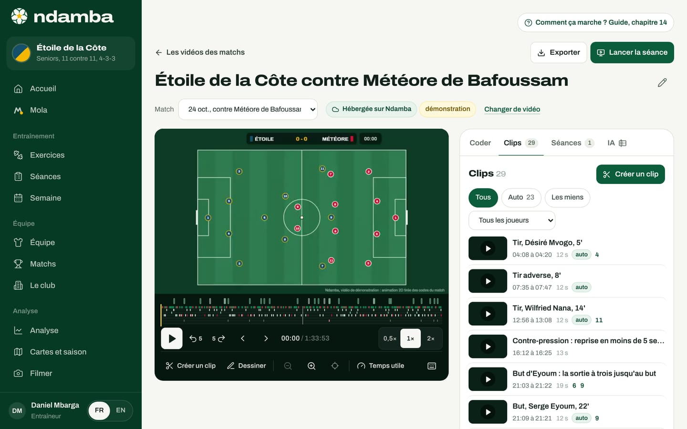
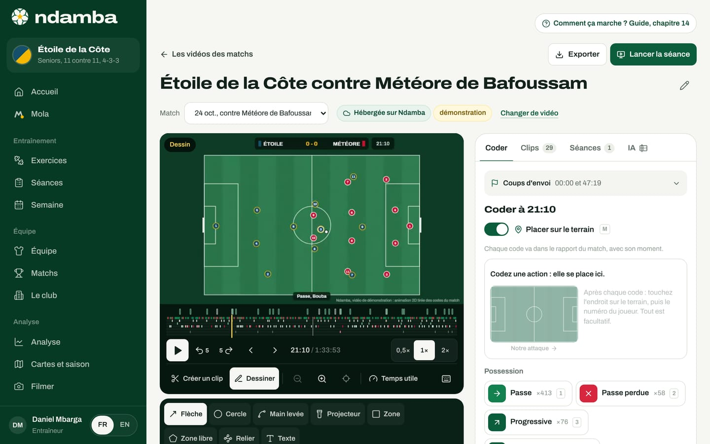
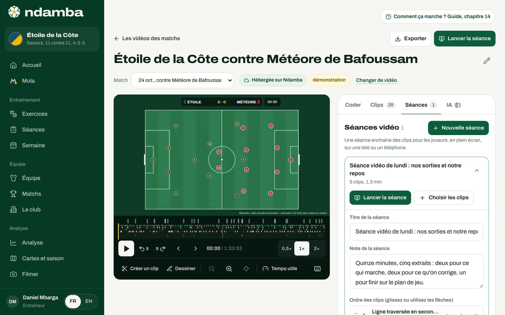
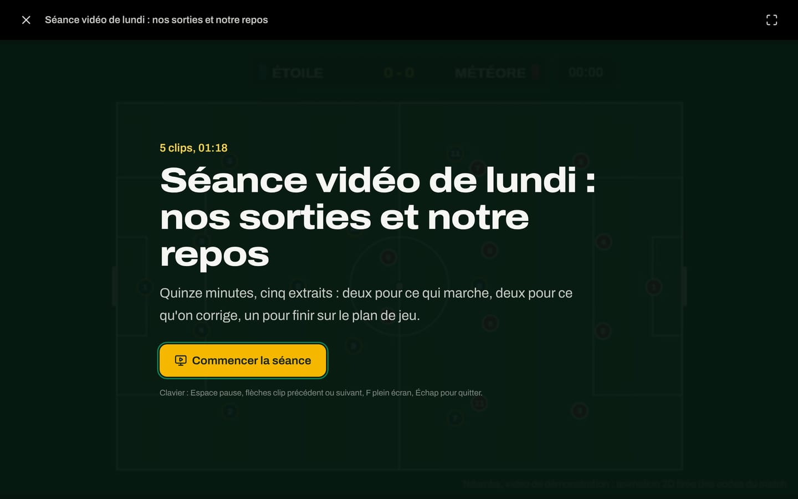

Le montage vidéo : clips, dessins, séance
Le studio vidéo devenu un outil de montage : la disposition de l’écran, la frise et ses lignes, le codage avec la place sur le terrain, les coups de pied arrêtés, les clips (manuels et automatiques), les dessins avec huit outils, le zoom, le temps utile, l’export d’un clip, le lien d’un moment, les séances vidéo en plein écran et les raccourcis clavier. Avec une méthode : une séance de quinze minutes, trois à cinq clips, le positif d’abord.
13 min de lecture
Coder un match sert à le mesurer. Le montrer aux joueurs sert à le changer. Entre les deux, il y a un travail que les clubs professionnels confient à un analyste vidéo : choisir les bons moments, les découper, dessiner dessus ce qu’il faut voir, et les enchaîner devant le groupe. Le studio de Ndamba fait ce travail dans le navigateur, sur la même vidéo et avec les mêmes codes que le rapport. Ce chapitre le parcourt avec la vidéo de la démo club pro, le match Étoile de la Côte contre Météore de Bafoussam, hébergé sur Ndamba et codé action par action.
Le chapitre 14 explique comment ouvrir une vidéo, marquer les coups d’envoi et coder ; le chapitre 12, ce que veut dire chaque code. Celui-ci part de là.
L’écran du studio

Sur un ordinateur, l’écran a quatre zones.
La barre du haut. Le lien Les vidéos des matchs pour revenir à la liste, Exporter (les fichiers de l’analyse) et Lancer la séance quand une séance vidéo existe. Dessous, le titre de la vidéo avec son crayon (Renommer la vidéo), le menu Match qui lie la vidéo à un match, ou à Aucun match (entraînement, observation), puis l’origine de la vidéo et Changer de vidéo.
Le lecteur. L’image, puis la frise, puis les commandes : Lecture et Pause, Reculer de 5 s et Avancer de 5 s, Image précédente et Image suivante, le temps (« 21:40 / 1:33:53 »), et les vitesses 0,5×, 1× et 2×. Une rangée d’outils suit : Créer un clip, Dessiner, Dézoomer et Zoomer, le suivi du ballon, Temps utile et, au bout, le clavier qui ouvre les Raccourcis clavier.
La frise. Elle porte les clips en haut, puis une ligne fine par famille de codes, dans les couleurs des boutons : possession, danger, fixation, transitions, coups de pied arrêtés, adversaire et notes. Chaque action codée y laisse un trait. La tête de lecture dorée montre où vous êtes ; touchez ou faites glisser pour vous déplacer. Pendant la création d’un clip, une ligne Détail du clip grossit la zone du clip pour régler ses bornes au dixième de seconde.
Le panneau des outils. Quatre onglets : Coder, Clips (avec leur nombre, 29 dans la démo), Séances (1) et IA. Chacun a son adresse ( ?panneau=coder, clips, seances ou ia), pratique pour envoyer un adjoint directement aux clips.
Sur téléphone, le lecteur reste collé en haut et le panneau défile dessous.


D’où vient la vidéo
Quatre origines sont possibles, affichées à côté du menu Match : Sur YouTube, Sur Facebook, Fichier : match.mp4 (un fichier ouvert sur l’appareil) et Hébergée sur Ndamba. Une vidéo hébergée a été envoyée sur Ndamba (chapitre 31) : elle se lit tout de suite, sur n’importe quel appareil, sans rouvrir de fichier. La vidéo de la démo porte aussi la mention démonstration : c’est une animation 2D de 94 minutes tirée des codes du match, servie par Ndamba, pour que chaque action codée se voie à l’écran. Si une vidéo hébergée ne se charge pas, le studio le dit et propose Réessayer.
Les outils ne marchent pas partout, parce que les lecteurs de YouTube et de Facebook ne laissent ni capturer ni ralentir librement leur image :
| Fichier ou hébergée | YouTube | ||
|---|---|---|---|
| Coder, placer, clips, séances | oui | oui | oui |
| Vitesses 0,5× et 2× | oui | oui | non |
| Image par image, zoom | oui | non | non |
| Dessin sur l’image | oui | non | non |
| Exporter un clip en vidéo | oui | non | non |
| Copier le lien d’un moment | non | oui, au bon moment | oui, au début de la vidéo |
Coder avec la place sur le terrain
L’onglet Coder commence par les Coups d’envoi (« 00:00 et 47:19 » dans la démo) : une bande repliable avec 1re mi-temps, 2e mi-temps et Marquer ici (chapitre 14). Puis le titre Coder à 21:40, qui suit le temps de la vidéo, et l’interrupteur Placer sur le terrain (touche M). Le code se place au moment affiché par la vidéo ; pour une vidéo liée à un match, « Chaque code va dans le rapport du match, avec son moment. »


Avec Placer sur le terrain activé, chaque code ouvre un panneau : « Passe à 21:40 : où, et qui ? ».
- Touchez l’endroit de l’action sur le mini-terrain. Notre attaque va toujours de gauche à droite, quel que soit le côté filmé.
- Sous Qui ?, touchez le numéro du joueur. Le panneau propose les joueurs sur le terrain à ce moment : les titulaires du match, plus les remplaçants à partir de leur première action codée (« Remplacements déduits des codes »). Tout l’effectif ouvre la liste entière.
- Pour une passe, passez à Reçue par et touchez le receveur. C’est ce qui dessine le réseau de passes (chapitre 28).
- Terminé, ou simplement le code suivant. Passer continue sans placer.
Au clavier, c’est plus rapide : « tapez le numéro du maillot, Entrée pour terminer, Échap pour passer. Les lettres codent l’action suivante. » Pour une action de l’adversaire, seul l’endroit est demandé. Ces positions et ces noms nourrissent les cartes, l’onglet Joueurs du rapport et les profils de recrutement (chapitre 27). Elles restent facultatives : un match codé sans placement a son Indice et son rapport, sans cartes.
Les boutons de codes suivent, par famille, chacun avec son compteur (« ×412 ») et sa touche. Dessous, deux blocs nouveaux :
- Coups de pied arrêtés, « Comptés à part, jamais dans l’Indice » : pour nous, Corner (C), Coup franc (X), Penalty (P), Touche (T) et Six mètres (G) ; pour l’adversaire, les mêmes avec la touche Majuscule. Placés, ils remplissent la carte des coups de pied arrêtés.
- Note : une phrase libre au moment présent (« le pivot se retourne »), avec Ajouter la note (touche N).
Enfin, la liste Actions codées (783 dans la démo), filtrable par famille. Chaque ligne donne le temps, le code et les numéros (« Passe 11 vers 8 »). Touchez-la pour revoir l’action ; l’épingle la place ou la replace sur le terrain ; la corbeille la supprime. La carte Indice Njangi se met à jour à chaque code, avec le lien Rapport du match.
Les clips
Un clip est un passage choisi de la vidéo, avec un début, une fin, un titre, une note et les joueurs concernés. Ce n’est pas un nouveau fichier : c’est un repère dans la vidéo, qu’on rejoue, qu’on range dans une séance ou qu’on exporte.


Créer un clip.
- Placez la vidéo sur l’action et touchez Créer un clip : le panneau Nouveau clip s’ouvre avec un clip de six secondes avant à six secondes après ce moment.
- Ajustez les bornes : Début ici (touche I) et Fin ici (touche O) les placent au moment de la vidéo, et les deux poignées dorées de la frise se règlent au doigt, au dixième de seconde dans la ligne de détail. Le panneau affiche la durée.
- Donnez un Titre (« la sortie à trois jusqu’au but ») et une Note pour les joueurs : ce qu’il faut regarder.
- Touchez les Joueurs concernés.
- Lire le clip pour vérifier, puis Enregistrer le clip. « Clip enregistré ».
Les clips automatiques. Chaque tir et chaque but codé crée tout seul son clip, de huit secondes avant à quatre secondes après l’action, avec un titre comme « But, Serge Eyoum, 22’ » ou « Tir adverse, 8’ ». Ils portent la mention auto et suivent l’action codée : si l’action change, le clip suit. On ne les modifie pas ; Dupliquer pour modifier en fait une copie libre (« Copie créée : modifiez-la librement »). Dans la démo, 23 des 29 clips sont automatiques ; les 6 autres ont été faits par le staff.
Retrouver un clip. Les filtres Tous, Auto et Les miens, et le choix d’un joueur, trient la liste. Chaque ligne donne le titre, les bornes (« 16:12 à 16:25 »), la durée et les numéros des joueurs. Touchez un clip pour ses actions : Lire le clip, Modifier (ou Dupliquer pour modifier), Ajouter à une séance, Exporter le clip, Copier le lien du moment et Supprimer.
Dessiner sur l’image
Le dessin marche sur un fichier ou une vidéo hébergée. Touchez Dessiner (ou D) : la vidéo se met en pause, la mention Dessin s’affiche sur l’image et une barre d’outils s’ouvre sous le lecteur.


| Outil | Geste |
|---|---|
| Flèche | Glissez pour tracer une flèche : une course, une passe |
| Cercle | Glissez depuis le centre pour entourer |
| Main levée | Dessinez librement |
| Projecteur | Touchez un joueur pour l’éclairer, glissez pour agrandir l’anneau |
| Zone | Glissez pour poser une zone rectangulaire : un espace libre, un couloir |
| Zone libre | Touchez chaque coin, puis le premier point, un double appui ou Entrée pour fermer |
| Relier | Touchez les joueurs l’un après l’autre pour les relier (une ligne de quatre, un triangle), puis un double appui ou Entrée |
| Texte | Touchez l’endroit, écrivez, puis Entrée |
Cinq couleurs : Or, Blanc, Rouge, Vert, Bleu. Annuler, Rétablir et Tout effacer corrigent (Ctrl+Z et Ctrl+Y au clavier) ; Terminer ferme une zone libre ou une liaison en cours. Enregistrer l’image fond l’image et le dessin, et une ligne dit où l’image ira : sur le clip en cours de création, sur le clip choisi, sur l’action sélectionnée, ou comme une note à ce moment. Sur un clip automatique, le studio en fait une copie avec l’image. Fermer le dessin (ou Échap) referme la barre.
L’image d’un clip compte : dans la séance vidéo, le clip s’ouvre sur elle, tenue trois secondes, avant de jouer.
Zoomer, et le temps utile
Le zoom. Sur un fichier ou une vidéo hébergée, Zoomer et Dézoomer (ou la molette, deux doigts, les touches + et -) grossissent l’image jusqu’à trois fois ; faites glisser l’image pour vous déplacer. Vue large (touche 0) revient à l’image entière. Le bouton du suivi automatique du ballon répond honnêtement : « Suivre le ballon automatiquement demande de repérer le ballon sur chaque image : c’est dans la feuille de route, pas encore dans l’application. »
Le temps utile. Un match de 94 minutes contient beaucoup de temps mort : ballon sorti, soins, remplacements. Temps utile (touche U) ne lit que les moments autour des actions codées et des clips : les passages de plus de douze secondes sans aucun code sont sautés, avec quatre secondes gardées avant la première action d’un passage et trois après la dernière. Une ligne sous les outils donne la durée gardée sur la durée totale de la vidéo. L’application ne détecte pas seule les arrêts de jeu : elle s’appuie sur votre codage.
Exporter un clip, partager un moment
Exporter le clip fabrique un fichier vidéo du clip sur l’appareil, pour l’envoyer dans le groupe WhatsApp de l’équipe. Le clip est lu une fois pour être enregistré : « comptez sa durée, plus quelques secondes. Gardez cette page ouverte. » La vidéo s’ouvre sur le titre, puis sur l’image dessinée tenue trois secondes s’il y en a une, puis le clip avec son titre en petit. Deux limites, écrites dans la fenêtre : le son n’est pas inclus, et l’export ne marche que sur un fichier ou une vidéo hébergée, dans un navigateur récent. En cas d’échec : « Essayez avec Chrome ou Edge à jour. » Quand c’est prêt : « Vidéo prête », et le téléchargement commence.
Copier le lien du moment sert aux vidéos YouTube et Facebook. Pour YouTube, le lien copié ouvre la vidéo au début du clip : un joueur le reçoit et tombe sur le bon moment, même sans Ndamba. Facebook ignore le moment dans ses liens : le message rappelle à quelle minute aller.
Exporter, en haut du studio, télécharge les données sans rien envoyer : Actions codées (CSV) pour un tableur (moment, code, joueur, receveur, place sur le terrain), Actions codées (JSON) avec toutes les données de l’analyse et l’Indice Njangi, et Exporter les clips (JSON), les clips et les séances avec leurs moments et leurs joueurs.
Les séances vidéo
Une séance enchaîne des clips pour les joueurs, en plein écran, sur une télévision de vestiaire, un ordinateur branché à un projecteur ou un téléphone tendu à un joueur.


Préparer une séance.
- Onglet Séances, touchez Nouvelle séance.
- Donnez un Titre de la séance et une Note de la séance : « Le message à faire passer, en une ou deux phrases. »
- Touchez Choisir les clips, cochez les clips, puis le bouton Garder (« Garder 5 clips ») ; ou, depuis un clip de l’onglet Clips, touchez Ajouter à une séance et choisissez la séance (ou créez-en une).
- Réglez l’Ordre des clips en les glissant ou avec les flèches Monter et Descendre. Retirer de la séance enlève un clip sans le supprimer.
La séance de la démo s’appelle « Séance vidéo de lundi : nos sorties et notre repos » : cinq clips, 1 min 18 s d’images, avec cette note : « Quinze minutes, cinq extraits : deux pour ce qui marche, deux pour ce qu’on corrige, un pour finir sur le plan de jeu. » Supprimer la séance demande confirmation : « Supprimer cette séance ? Les clips restent. »
Lancer la séance. Lancer la séance, en haut du studio ou sur la séance, ouvre le mode présentation à l’adresse /app/analyse/video/ suivie de l’identifiant de la vidéo et de /seance. Une page de garde montre le titre, le nombre de clips et leur durée, la note, et Commencer la séance.


Chaque clip s’affiche avec son titre et sa note en grand, et les joueurs concernés. Un clip qui porte un dessin s’ouvre sur l’image dessinée, tenue trois secondes (« Image du coach, la vidéo reprend dans un instant. »). Le clavier suffit : « Espace pause, flèches clip précédent ou suivant, F plein écran, Échap pour quitter. » À la fin : Fin de la séance, « 5 clips revus. À l’entraînement maintenant. », avec Revoir depuis le début et Retour au studio. Pour une vidéo gardée en fichier, la séance demande d’abord d’ouvrir le fichier.
La méthode : quinze minutes, trois à cinq clips, le positif d’abord
Une séance vidéo trop longue perd le groupe au bout de dix minutes. La méthode du Code Njangi tient en quelques règles.
- Un thème par séance. Celui du rapport : l’intention de la semaine (chapitre 13). Dans la démo, la Fixation et la défense de repos.
- Trois à cinq clips, pas plus. Choisissez-les dans la liste des clips filtrée, ou depuis les cartes et la chronologie du rapport, qui ouvrent les bons moments (chapitre 28).
- Le positif d’abord. Ouvrez sur ce qui a marché et qui correspond au modèle de jeu : le joueur voit d’abord ce qu’on attend de lui. Puis un ou deux clips à corriger, sans désigner un coupable : on montre une situation, pas une faute.
- Une image par clip à corriger. Une flèche pour la course qui manquait, un projecteur sur le joueur libre, une zone pour l’espace à occuper.
- Finir sur le plan. Le dernier clip montre ce qu’on veut refaire samedi. Dans la démo, la séance se termine sur le but adverse : pour suivre sa propre note, glissez le but d’Eyoum en dernier.
- Quinze minutes en tout, clips et échanges compris, puis le terrain.
Pour une équipe de jeunes, la règle du rapport vaut ici aussi : on montre l’équipe, pas un enfant devant le groupe.
Les raccourcis clavier
Le bouton clavier, sous le lecteur, ou la touche ?, ouvre l’aide Raccourcis clavier.
| Touche | Action |
|---|---|
| Espace | Lecture ou pause |
| ← → | Reculer ou avancer de 5 s |
| Majuscule + ← → | Action codée précédente ou suivante |
| , et . | Image par image |
| 1 à 9, F S L K R, A B, Q W E | Les codes (mêmes touches qu’en direct) |
| C X P T G | Corner, coup franc, penalty, touche, six mètres (nous) |
| Majuscule + C X P T G | Les mêmes pour l’adversaire |
| M | Placer sur le terrain (activer ou couper) |
| N | Écrire une note |
| I et O | Début et fin du clip |
| D | Dessiner |
| U | Temps utile |
| + - 0 | Zoomer, dézoomer, vue large |
| ? | Cette aide |
Quand le placement est ouvert, les chiffres tapent le numéro du maillot, Entrée termine et Échap passe.